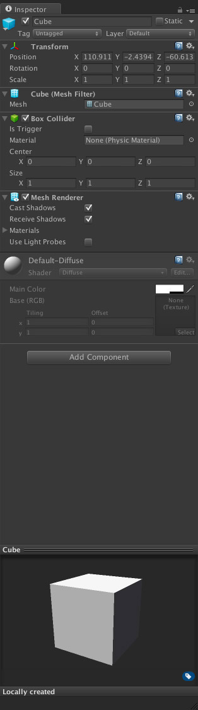
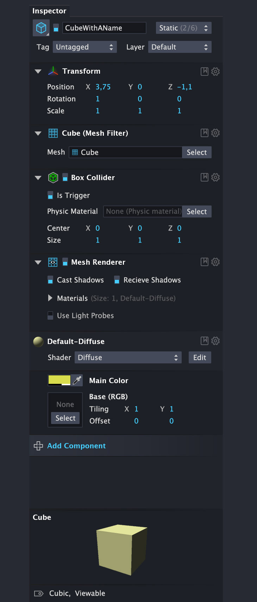
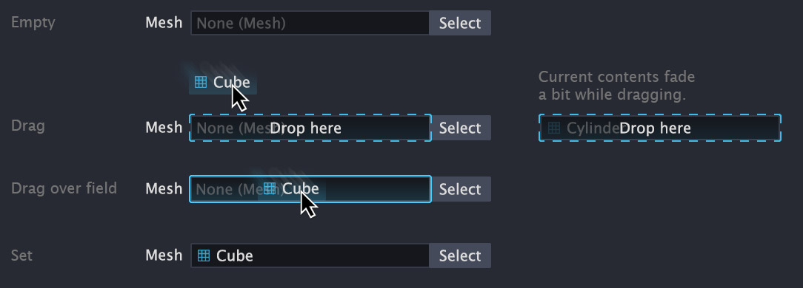
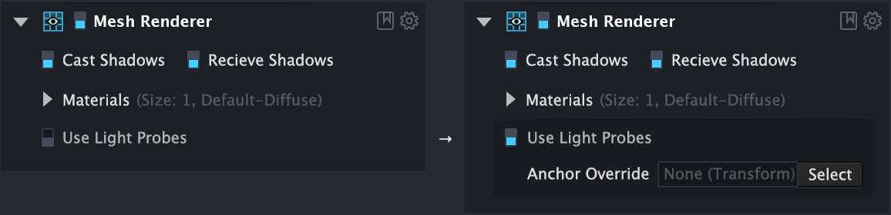
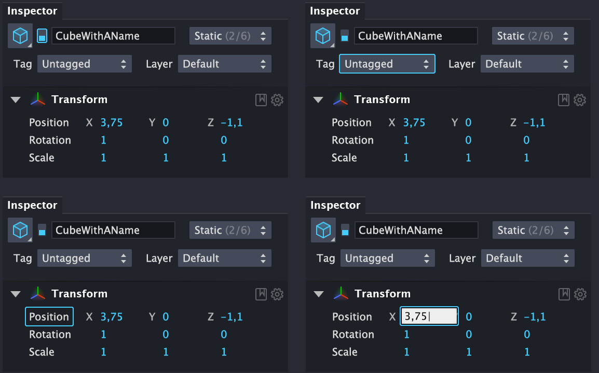

Here is the original Inspector:
Basically it is just a reskin but it also includes some micro-interaction or comprehension improvements. Those are achieved with visual changes or small controls tuning. There it goes:

Details are important as always.
Complex combo-box with Static-behaviours now tries to be more friendly.
GameObject container responds to drag and drop.
Drawing boundaries around some grouped controls which have some not very obvious dependencies.
Systematic solution on keyboard-focus also keeps it pretty fancy.
